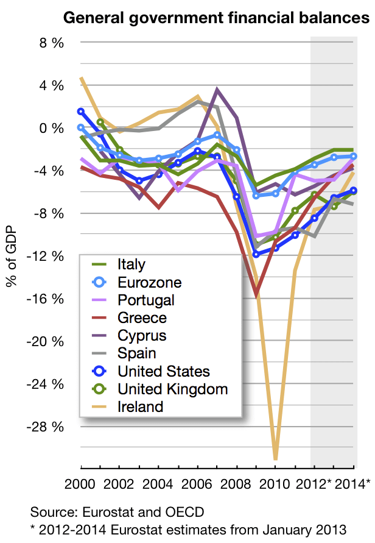
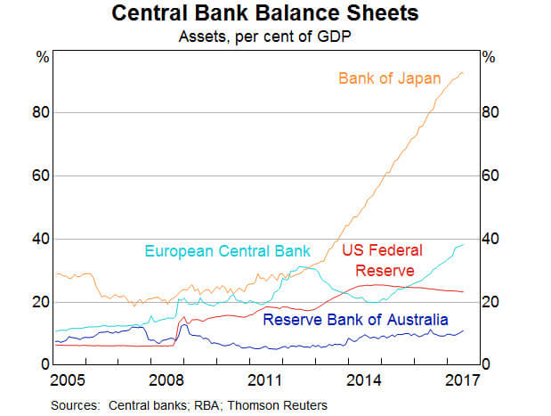
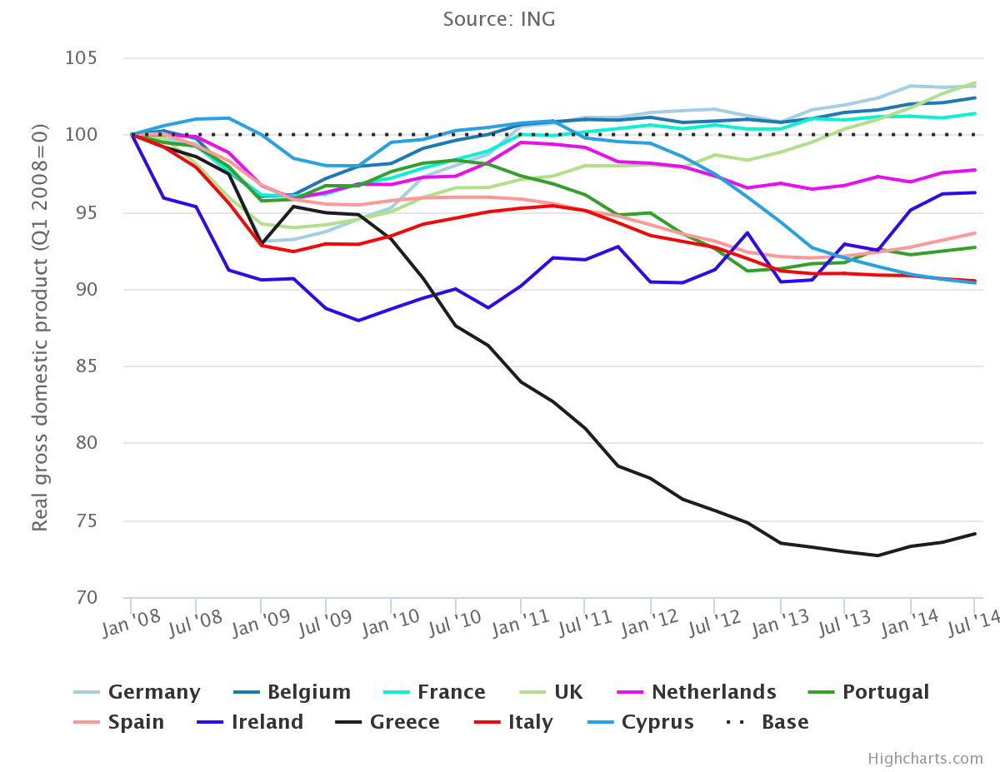

Counting Down the Biggest Economic Policy Announcements since the 2008 Financial Crash
In economics, recessions and depressions are supposed to have taught us many valuable lessons (Keynes was one of them). What about the last major recession? It’s been a decade since the Global Markets Crash of ’08. As we enter 2019, let’s see how our governments and institutions have used their financial knowledge over the decade. Many of these announcements are a direct cause of the crisis, while the rest were too important to be left out. Here you go:
1 - American Recovery and Reinvestment Act of 2009
It is early 2009, the United States, reeling from the 2008 Financial Crisis, has the New Year as the only positive yet (besides the new President). Obama outlined throughout his 2008 campaign plans for an economic stimulus package and this was delivery time. On February 17, 2009, President Obama signed the fiscal stimulus passed by Congress, which would raise overall demand in the economy by an initial $780-billion worth of federal spending and tax cuts.
This indeed was a necessary follow-up to President Bush’s Troubled Asset Recovery Program, which bailed out the big banks of Wall Street still at the point of revival (sorry, Lehman Brothers). It was only later in 2012 that Congress added to the ARRA making it stand at eight-hundred-and-forty-billion-dollars.
The Act was largely successful, ending the Recession in July 2009, just 5 months after the bill’s passing. Although many people were skeptical whether they received any tax benefits, the program was hailed for its effectiveness and served as a model for a country that appears later.
2 - North Korea ‘Won’, 2009
No, they did not win 2009. There have not been many cases of currency revaluation or demonetization in the 21st Century; in fact, less than the number of fingers on your hand. Yet for an occurrence this rare, the 2nd entry on our list has not had the fanfare it deserves. We travel far East to the Korea of the daily news cycle. You guessed it, welcome to North Korea.
In November 2009, the North Korean government decided to devalue their currency, the Won, for the first time in 50 years. Many speculated this was a move either initiated or approved personally by Supreme Leader Kim Jong-Il, father of Kim Jon-Un. Seen as a move against private market activity, it also wiped out many North Koreans’ savings. To make matters worse, the announcement was made to foreign embassies but not to North Korean State media. The old notes ceased to be legal tender on November 30, with new notes not being delivered until December 7.
One can only think of ways to spend that week without monetary transaction possible. Needless to say, things were chaotic.
3 - The Dodd-Frank Wall Street Reform and Consumer Protection Act 2010
They can blame the Housing markets all they want. But the reason why banks went overboard was in large part due to the repealing of the Glass-Steagall Act in 1999. The Glass–Steagall Act was enacted after the Great Depression of 1930. It separated commercial banks and investment banks, to avoid potential conflicts of interest between the lending activities of the former and rating activities of the latter. Economist Joseph Stiglitz said the repeal would mean the risk-taking culture of investment banking dominated the more risk-averse commercial banking culture, leading to increased levels of risk-taking and leverage during the boom period.
Enter the Dodd-Frank reforms. Spelled out over roughly 2,300 pages, this piece of financial reform intends to decrease various risks in the U.S. financial system. The Act established a number of new government agencies tasked with overseeing various aspects of the banking system. Apart from monitoring the financial stability of major firms whose failure could have a major negative impact on the economy, it also provides for regulations keeping a check on Wall Street, which is why President Trump looks to repeal it.
4 - Austerity returns—to Ireland, Greece, the U.K., and, perhaps to the U.S.A., 2011
Ah, dear, Austerity! The things you promised us, and now look at what you did to the PIGS (and Italy).
If you don’t know who or what I’m talking about, the reduction of government budget deficits through spending cuts, tax increases, or a combination of both is referred to as Austerity. It is a series of strict measures to deal with governments unable to pay their debts, viz. Greece (which lost 25% of its GDP) and the members of the Eurozone who have spectacularly contributed to its economic failure.

During the European debt crisis, many countries embarked on austerity programs, reducing their budget deficits relative to GDP from 2010 to 2011. According to the CIA World Factbook, Greece decreased its budget deficit from 10.4% of GDP in 2010 to 9.6% in 2011. Iceland, Italy, Ireland, Portugal, France, and Spain also decreased their budget deficits from 2010 to 2011 relative to GDP.
In reality, the European people found it too tough to cope up with the heavy tax burdens and unemployment went from 10.3% in 2011 to 12.1% in 2013. Even Paul Krugman saw no sign of success, “this also implies that 1 euro of austerity yields only about 0.4 euros of reduced deficit, even in the short run. No wonder, then, that the whole austerity enterprise is spiraling into disaster.”
5 - Cyprus and the Big Bailout, 2013
Here is a story with a happy ending―but it starts off just as bad as the Eurozone. Back in 2013, Europe looked on in despair as yet another country appeared on the brink of collapse. Panic spread through the Cyprus financial system as government bonds were downgraded to junk status and long queues formed outside cash machines as the country failed to make ends meet. Cyprus struck a last-minute bailout deal worth 10 billion euro ($11 billion) in the early hours of Monday morning, aimed at preventing the island becoming the first country forced out of the single European currency. Guess where the help came from- Russian Oligarchs.
Cyprus’s second-largest bank, Laiki Bank was closed. Its €4.2bn in deposits over €100,000 were wiped out entirely. All lenders to Laiki saw their investments wiped out, in a first for a Eurozone bailout. Bank of Cyprus survived the axe. Fast forward to March 2016 via a rescue package program, raft of reforms and austerity measures (finally worked!) and the country is exiting its three-year, 10 billion euro financial aid package as one of the more robust Eurozone economies. Voila!
6 - Japan’s Quantitative Easing is like the USA on steroids!, 2014
The United States did quantitative easing the right way; with loads and loads of asset purchases by the government. Under the most recent incarnation of monetary easing - dubbed “QE3” - the central bank has purchased around $1.6 trillion in government bonds and mortgage-backed securities.
The Japanese then went out and did this:

(Here’s a graph, showing the BoJ’s asset purchases, source: Haver Analytics)
Just as the Federal Reserve was winding down, the Bank of Japan (BoJ) voted by 5:4 in a hotly-contested decision to boost its asset purchases by a quarter to roughly $700bn a year, covering the fiscal deficit and the lion’s share of Japan’s annual budget. Governor Haruhiko Kuroda said the fresh stimulus was intended to “pre-empt” mounting deflation risks in the world and vowed to do whatever it takes to see through Japan’s “Abenomics” revolution. “We are at a critical moment in our efforts to break free from the deflationary mindset,” he said.
Hans Redeker, from Morgan Stanley, believes that Japan’s aggressive measures seem to be putting pressure on the rest of their economic competitors in Asia to raise government spending too. But this is where China finds it tough to compete with a large budget deficit, slowing economy and FDI gradually turning negative. No wonder the Dragon is angry at its eastern neighbour.
7 - Greece becomes first advanced economy ever to fail in arrears to the IMF, 2015
“2015 was all about Greece”—is an understatement. 2015 saw Greece’s debt crisis, Greece’s referendum, Greece’s bailout, Greece’s election, Greece’s second election. At one point it really seemed that the battered country, which has been through so much, would finally crash out of the eurozone.
The No Bailouts campaign securing 61.31% majority, won the referendum. In a television address, PM Alex Tsipras said the outcome showed that democracy could not be blackmailed.
Just a week later, however, he would be forced to accept a bailout of further austerity measures and economic reforms, even more onerous than those the nation had so dramatically rejected.

8 - India’s Demonetization and the GST Bill, 2016
Two polar opposites. One nobody saw coming and the other that had been there all along. No, I’m not referring to the Congress and the BJP.
The Demonetization Scheme struck like a lightning rod throughout Indian society, affecting both the poor and rich equally (so much for inequality). In a move targeted at debilitating the shadow economy, counterfeit cash and “black money” used to fund illegal activity, Rs. 500 and Rs. 1000 banknotes were demonetized and new Rs. 500 and Rs. 2000 notes were introduced. The GST Bill, on the other hand, was first put forth by the Vajpayee administration almost 20 years ago but only saw the light of day in late 2016. It has successfully eliminated the Cascading effect of taxes (tax on a tax) and taken its place as the Destination tax of the future.
Despite being initially met with protests, litigation, and strikes, it has received support from many eminent bankers and the IMF.
9 - Venezuela devalues its currency by the crypto, 2018
We have truly reached the advent of technology when Venezuela decides to peg the Bolivar to an oil-backed cryptocurrency called the petro.
Venezuela under Nicolas Maduro is an economic autocracy at best. Since 2014, they have lied on reports and economic statistics and by 2016, were in an economic collapse, with the IMF estimating a 500% inflation rate and a 10% GDP contraction and as of today, are experiencing Hyperinflation—Wow.
So the government decided to slash five zeros off and devalue the currency, and back it by their oil and mineral reserves; the only things not spiraling out of control.
Really a sneak peek of the decade to come!
Subscribe to The Pangean
Get the latest posts delivered right to your inbox